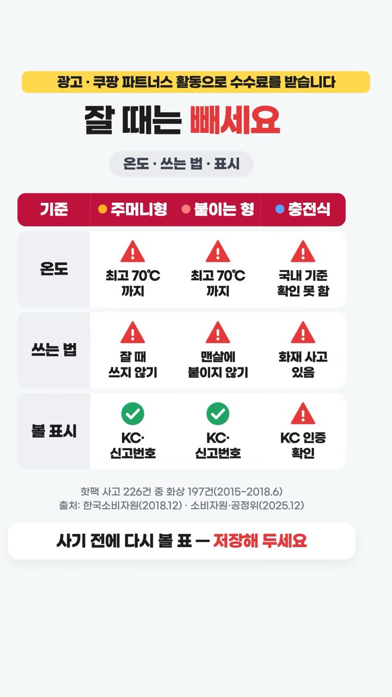

5번 영상
핫팩 화상 10명 중 9명 2 · 3도였어요
광고 이 게시물은 쿠팡 파트너스 활동의 일환으로, 이에 따른 일정액의 수수료를 제공받습니다.
영상에서 비교한 3가지예요. 누르면 쿠팡 검색 결과로 가요.
영상 속 비교표 바로 보기 ↓핫팩 3종, 어디서 데일까요?
주머니형 · 붙이는 형 · 충전식
최고 70℃까지 올라요 (소비자원)
- 주머니형 (흔드는)
- ✔ KC·신고번호 표시 의무
- ⚠ 최고 70℃ 저온 화상
- 주머니· 장갑 속에
- 붙이는 형 (옷에 붙임)
- ✔ KC·신고번호 표시 의무
- ⚠ 맨살에 붙이지 않기
- 옷 위에 붙일 때
- 충전식 (손난로)
- ✔ 충전해서 다시 씀
- ⚠ 사고 21건 중 화재 14건
- KC 인증 확인 뒤
잘 때는 빼세요
온도 · 쓰는 법 · 표시
| 주머니형 | 붙이는 형 | 충전식 | |
|---|---|---|---|
| 온도 | ⚠ 최고 70℃ 까지 | ⚠ 최고 70℃ 까지 | ⚠ 국내 기준 확인 못 함 |
| 쓰는 법 | ⚠ 잘 때 쓰지 않기 | ⚠ 맨살에 붙이지 않기 | ⚠ 화재 사고 있음 |
| 볼 표시 | ✔ KC· 신고번호 | ✔ KC· 신고번호 | ⚠ KC 인증 확인 |
핫팩 사고 226건 중 화상 197건(2015~2018.6) 출처: 한국소비자원(2018.12) · 소비자원·공정위(2025.12)
